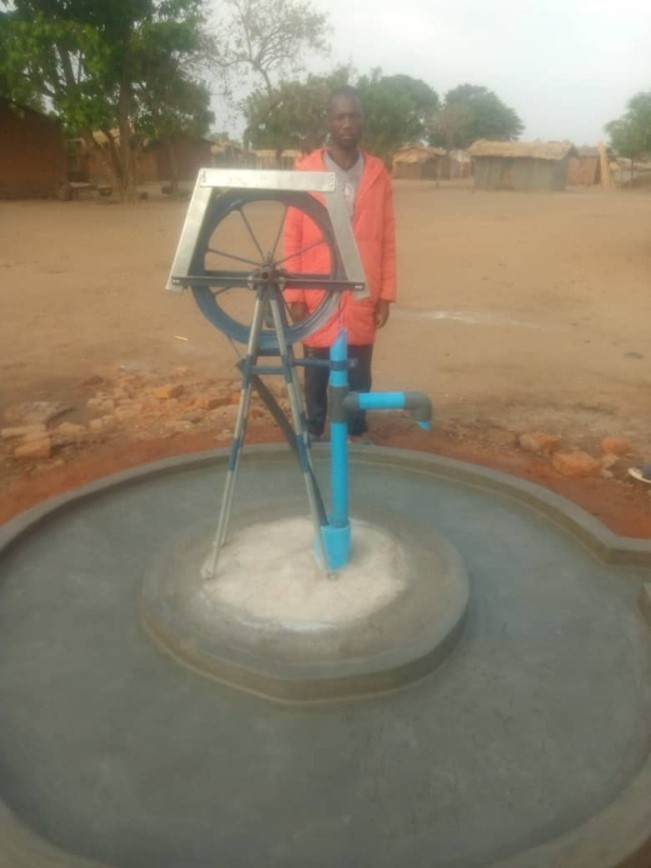
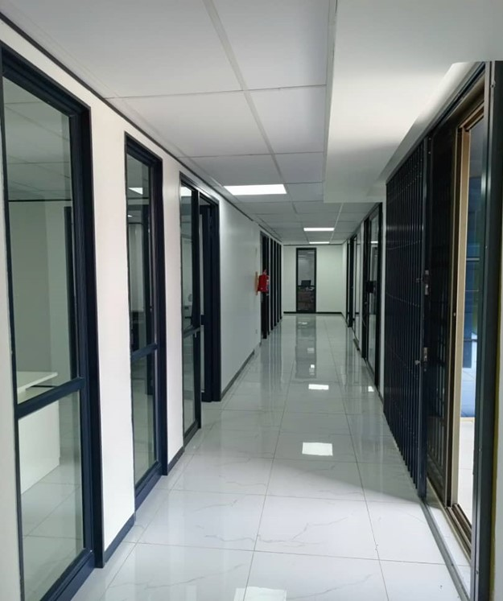

| Position | Name | Qualifications | Years of Experience |
|---|---|---|---|
| Director-Technical, Contracts and Business Development | Chimwemwe Kakhuta Mtegha | Master of Science in Infrastructure Management and Development, Bachelor of Science in Civil Engineering, Project Management Practitioner | 23 |
| Director – Operations and Finance | Martha Gombe Munthali | Bachelor if Business Administration | 15 |
| Technical Manager | Innocent Grey | Bachelor of Civil Engineering | 5 |
| Quantity Surveyor | Wills Njoka | Bachelor of Science in Quantity Surveying | 10 |
| Architect | Billy Milimbo | Bachelor of Science in Architectural Studies | 10 |
| Projects Engineer | Nelson Kachali | Bachelor of Science in Civil Engineering | 20 |
| Electro-Mechanical Engineer | Lusungu Nyirongo | Bachelor of Science in Electrical Engineering | 20 |
| Civil Engineer | Khetase Ngulube | Bachelor of Science in Civil Engineering | 6 |
| Works Foreman | Samuel Gonani | Advanced Diploma in Construction Technology plus Foremanship Certificates Level 1&2 | 12 |
| Works Foreman | Willard Mpakata | Advanced Diploma in Construction Technology | 16 |
| Surveyor | Phillip Katsala | Bachelor of Science in Land Surveying | 5 |
| Surveyor / Foreman | Vuka Mtegha | Certificate in Surveying and Foremanship Certificate 1&2 | 12 |
| Head Bricklayer | Afonso Hara | Bricklaying Certificate Level 1 | 8 |
| Head Carpenter | Simon John | Carpentry & Joinery Certificate Level I | 8 |
• UNDP Malawi, Area 40 Plot 7, P.O. Box 30135, Lilongwe 3.
• Department of Disaster Management Affairs, Private Bag 366, Lilongwe 3
• Transforming Agriculture through Diversification and Entrepreneurship Programme (TRADE), P.O. Box 2135, Lilongwe
• Alliance One Tobacco (Malawi) Limited, P.O. Box 30522, Lilongwe 3
• Lilongwe Water Board, P.O. Box 96, Lilongwe.
• Millennium Challenge Account – Malawi, P.O. Box 31513, Lilongwe 3.
• The U.S. Embassy Lilongwe, Area 40, Plot 24 Kenyatta Drive, P.O. Box 30016, Lilongwe 3.
USAID Malawi, NICO House, P.O. Box 30455, Lilongwe 3.
• UNICEF Malawi, Airtel Complex, P.O. Box 30375, Lilongwe 3.
• The Food and Agriculture Organization of the United Nations (“FAO”), Evelyn Court, Plot 13/31, P.O Box 30750, Capital City, Lilongwe 3.
• Capital City Baptist Centre, Plot No. 14/7, Area 14, Lilongwe.
• State Residences, P.O. Box 807, Lilongwe.
• Roads Authority, Private Bag B346, Lilongwe.
• Rural Infrastructure Development Project, P.O. Box 1071, Lilongwe.
• Rural Livelihoods Economic Enhancement Project, P.O. Box 30312, Lilongwe 3.
• Northern Region Water Board, Private Bag 94, Mzuzu.
| Year | Total Sales (MK) |
|---|---|
| 2022 | 699,078,543.21 |
| 2021 | 564,236,875.98 |
| 2020 | 974,566,019.17 |
| 2019 | 829,417,888.66 |
| 2018 | 1,122,078,968.47 |
| 2017 | 406,587,561.09 |
| 2016 | 391,325,852.83 |
Our construction company has an impressive portfolio of completed projects, ranging from residential homes and commercial buildings to roads and bridges, etc. We take pride in the quality of our work and the satisfaction of our clients. Our portfolio showcases our ability to deliver innovative design, quality construction, and exceptional customer service.
| Project Name and Country | Name of Client and Contact Person | Type of Work Performed and Year of Completion | Value of Contract (MWK) |
|---|---|---|---|
| Partitioning of MCS-II Offices in Lilongwe; Malawi | Millennium Challenge Account – Malawi; Dye Mawindo | Drywall partitioning, plumbing and sanitary fitting installations, electrical installations installation of PABX system, HVAC, data installations, etc; 2023 | MK 454,279,825.00 |
| Construction of Washroom Facilities in Ntchisi and Mzimba Districts; Malawi | UNDP Malawi; Mr. Thenfold Kachulu | Excavations, Brickwork, Plastering, roofing, painting, electrical installation, septic tanks and manholes, plumbing and sanitary fittings, etc. 2023 | MK 49,000,000.00 |
| Installation of Six- and Three-Bay Prefabricated Offices in Zomba and Dedza Districts; Malawi | DODMA; Ellen Maliano | Installation of prefab structure, electrical installation, HVAC, plumbing works, etc.; 2023 | MK 56,000,000.00 |
| Development of wells and installation of handpumps in Dowa, Lilongwe, Kasungu and Mzimba Districts; Malawi | Alliance One Tobacco Limited; Owen Manonga | Excavations, construction of apron including soakpit and installation of hand pumps; 2023 | MK 75,000,000.00 |
| Construction of Sanitation Facilities at Chalusa and Chigumula Schools in Balaka; Malawi | UNICEF Malawi; Jackson Ndayizeye | Construction of VIP Latrines; 2023 | MK 106,000,000.00 |
| Construction of Sanitation Facilities at Malembo School in Mangochi; Malawi | UNICEF Malawi; Jackson Ndayizeye | Construction of VIP Latrines; 2023 | MK 52,000,000.00 |
| Construction of School Infrastructure at Chifunga and Chiwale CDSS in Neno District; Malawi | Ministry of Education, EQUALS Project; Tione Mughogho | Construction of Classroom Blocks and ICT Blocks; 2023 | MK264,000,000.00 |
| Project Name and Country | Name of Client and Contact Person | Type of Work Performed and Year of Completion | Value of Contract (MWK) |
|---|---|---|---|
| Partitioning of MCS-II Offices in Lilongwe; Malawi | Millennium Challenge Account – Malawi; Dye Mawindo | Drywall partitioning, plumbing and sanitary fitting installations, electrical installations installation of PABX system, HVAC, data installations, etc; 2023 | MK 454,279,825.00 |
| Construction of Washroom Facilities in Ntchisi and Mzimba Districts; Malawi | UNDP Malawi; Mr. Thenfold Kachulu | Excavations, Brickwork, Plastering, roofing, painting, electrical installation, septic tanks and manholes, plumbing and sanitary fittings, etc. 2023 | MK 49,000,000.00 |
| Installation of Six- and Three-Bay Prefabricated Offices in Zomba and Dedza Districts; Malawi | DODMA; Ellen Maliano | Installation of prefab structure, electrical installation, HVAC, plumbing works, etc.; 2023 | MK 56,000,000.00 |
| Development of wells and installation of handpumps in Dowa, Lilongwe, Kasungu and Mzimba Districts; Malawi | Alliance One Tobacco Limited; Owen Manonga | Excavations, construction of apron including soakpit and installation of hand pumps; 2023 | MK 75,000,000.00 |
| Construction of Sanitation Facilities at Chalusa and Chigumula Schools in Balaka; Malawi | UNICEF Malawi; Jackson Ndayizeye | Construction of VIP Latrines; 2023 | MK 52,000,000.00 |
| Construction of Sanitation Facilities at Malembo School in Mangochi; Malawi | UNICEF Malawi; Jackson Ndayizeye | Construction of VIP Latrines; 2023 | MK 52,000,000.00 |
| Construction of School Infrastructure at Chifunga and Chiwale CDSS in Neno District; Malawi | Ministry of Education, EQUALS Project; Tione Mughogho | Construction of Classroom Blocks and ICT Blocks; 2023 | MK264,000,000.00 |
| Project Name and Country | Client and Contact Person | of Work Performed and Year of Completion | Value of Contract (MWK) |
|---|---|---|---|
| Construction of Sanitation Facilities in Response to Cyclone Freddy at Nkanda School in Mulanje; Malawi | UNICEF Malawi; Jackson Ndayizeye | Construction of VIP Latrines; 2023 | MK 52,000,000.00 |
| Construction of sanitation facilities at Chimwankuku in Dedza; Malawi | UNICEF Malawi; Jackson Ndayizeye | Construction of 2-stance and 5-stance VIP latrines; 2021-2022 | MK 88,000,000.00 |
| Rehabilitation of Spotlight Centres in Ntchisi, Dowa and Machinga Districts; Malawi | UNDP Malawi; Mr. Thenfold Kachulu | painting works, LAN installation, security doors and general rehabilitation of offices; 2021 | MK 19,500,000.00 |
| Construction of Classrooms and Associated External Works at Kanonono and Lwanjati Junior Primary Schools; Malawi | Ministry of Education, Science and Technology; Eng. Susan Mponda | Construction of four double classroom blocks, external works, etc.; 2021 | MK 253,333,000.00 |
| Rehabilitation of Wall Fence a Kamuzu Place in Lilongwe; Malawi | State Residences; Charles Kwamwangala | balusters, spiral stair cases, painting, Suspended ceiling, tiling, rough plastering, sanitary fittings, external works, perimeter wall, etc. | MK 59,000,000.00 |
| Completion works for Capital City Baptist Church Youth Centre in Area 14, Lilongwe: Malawi | Capital City Baptist Church; Collins Kaunda | balusters, spiral stair cases, painting, Suspended ceiling, tiling, rough plastering, sanitary fittings, external works, perimeter wall, etc. | MK 119,000,000.00 |
| Supply and Installation of 127 Off 1000 Litre Water Tanks; Malawi | Food and Agriculture Organisation; Peter Nyirenda | Fabrication and Installation of Tank Stands and Supply and Installation of 1000 Litre Water Tanks; 2020 | MK 49,000,000.00 |
| Project Name and Country | Name of Client and Contact Person | PAST EXPERIENCE - BUILDING CONSTRUCTION WORKS: Type of Work Performed and Year of Completion | Value of Contract (MWK) |
|---|---|---|---|
| Maintenance of Food and Agriculture Organisation Representative Office in Lilongwe; Malawi | Food and Agriculture Organisation; Peter Nyirenda | Tiling, Painting, Installation of 10000Litre Water Tank, Installation of Palisade Fence, Aluminium Doors and Grill Doors; 2020 | MK 35,450,000.00 |
| Construction of 9m x 5m Swimming Pool at Pacific Properties in Area 9, Lilongwe; Malawi | Fazaya Zaheer | Construction of Swimming Pool; 2020 | MK 15,000,000.00 |
| Construction of Sanitation Facilities in Mzuzu; 2020 | UNICEF; Allan Kumwenda | Construction of Toilet Blocks at Zolozolo and Mzuzu Health Centres; 2020 | MK 47,000,000.00 |
| Construction of 15m x 10m Swimming Pool at Gateway Mall; Malawi | Kids; Michael Muhagama | Construction of Swimming Pool; 2018 | MK 25,000,000.00 |
| Construction of 10m x 5m Swimming Pool in Area 12; Malawi | Wapona Kita | Construction of Swimming Pool; 2019 | Construction of Swimming Pool; 2019 |
| Plumbing Works for Treasury Building in Lilongwe, Malawi | Ministry of Transport and Public Works – Buildings Department | Contractor to Western Construction, and was responsible for plumbing works; 2019 | MK 23,000,000.00 |
| Supply of Materials and Construction of Sanitation Facilities at Mzimba Boma; Malawi | Northern Region Water Board; Mr. Titus Mtegha | Construction of VIP Latrines, Rehabilitation of Waste Stabilisation Ponds, Construction of Offices, Perimeter Fences, Solid Waste Disposal Facilities, Gravel Access Roads; 2018 | MK 357,567,000.00 |
| Project Name and Country | Name of Client and Contact Person | Type of Work Performed and Year of Completion | Value of Contract (MWK) |
|---|---|---|---|
| Retainer Contract on Rehabilitation and Maintenance of US Government or Leased Real Property by US Embassy in Malawi, Malawi; | US Embassy Lilongwe; Francis Mthikira | Wall Fence Construction, Swimming Pools, Razor Wire Installation, Suspended Floors and Ceilings, Painting, Plumbing, Electrical Works, Installation of Generators; etc; 2018 - 2019 | MK 324,254,239.00 |
| Construction of Project Affected Persons in Nkhata Bay District; Malawi – Works Order No. 3, Malawi | Millennium Challenge Account – Malawi; Mr. Felix Nkhoma | Construction of 25 Houses, Out Buildings and VIP Latrines; 2017 | Construction of 25 Houses, Out Buildings and VIP Latrines; 2017 |
| Construction of Project Affected Persons in Nkhata Bay District; Malawi – Works Order No. 3; Malawi | Millennium Challenge Account – Malawi; Mr. Felix Nkhoma | Construction of 17 Houses, Out Buildings and VIP Latrines; 2016 | MK 554,324,000.00 |
| Construction of Warehouse at Bowe in T/A Chulu Area in Kasungu, Malawi | Rural Livelihoods Economic Enhancement Project; Mr. Davison Mandege | Construction of warehouse and offices, toilets and external works; 2014 | MWK 59,897,550.00 |
| Construction of Classroom Blocks and Sanitation Facilities at Mkandazi Primary School in Mzimba District, Malawi | Action Aid; Mrs. Khonje | Construction of 2 Classroom Blocks, 2013 | MWK 18,000,000.00 |
| Construction of Office Block for Directto Space Electronics and Television Laboratories in Mzuzu | DSE AND TL; Mr. W. Winga | Construction of Office Block; 2013 | Construction of Office Block; 2013 |
| Project Name and Country | Name of Client and Contact Person | Type of Work Performed and Year of Completion | Value of Contract (MWK) |
|---|---|---|---|
| Construction of Communal Water Points in Lilongwe City, Malawi | Lilongwe Water Board; Mr. Ken Nyirenda | Construction of communal water points and kiosks; 2013 | MWK 24,500,250.00 |
| Construction of Kiosks in Lilongwe City; Malawi | Lilongwe Water Board; Mr. Ken Nyirenda | Kiosks Construction including all Pipe Work and Fittings; 2012 | MWK 20,000,000.00 |
| Area 38 Manhole Chambers Construction Works; Malawi | Lilongwe Water Board; Mr. Ken Nyirenda | Chambers Construction for Gate Valves, Air Valves and Wash Out Valves on 110mm – 300mm Diameter Pipes; 2011 | MWK 3,781,656.77 |
| Area 49 Manhole Chambers Construction Works; Malawi | Lilongwe Water Board; Mr. Ken Nyirenda | Manhole Chambers Construction for Gate Valves, Air Valves and Wash Out Valves on 90mm Diameter Pipes; 2011 | MWK476,089.550 |